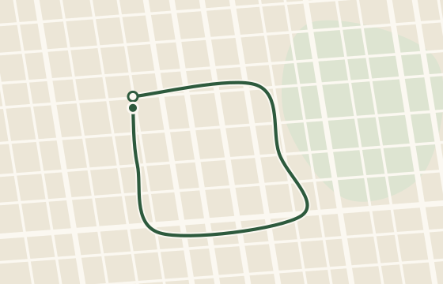
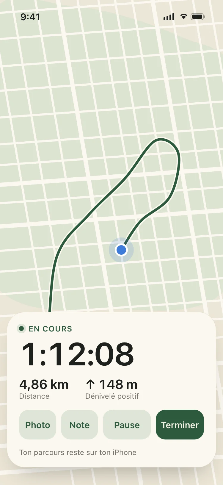
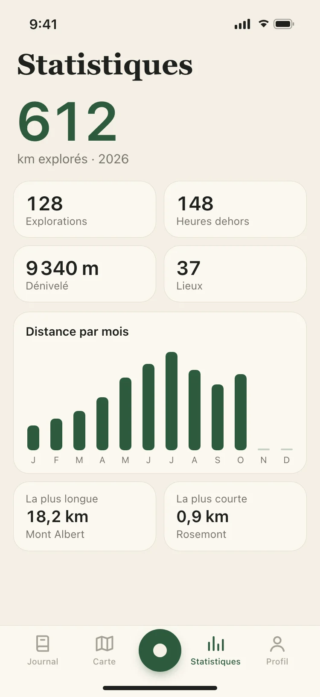
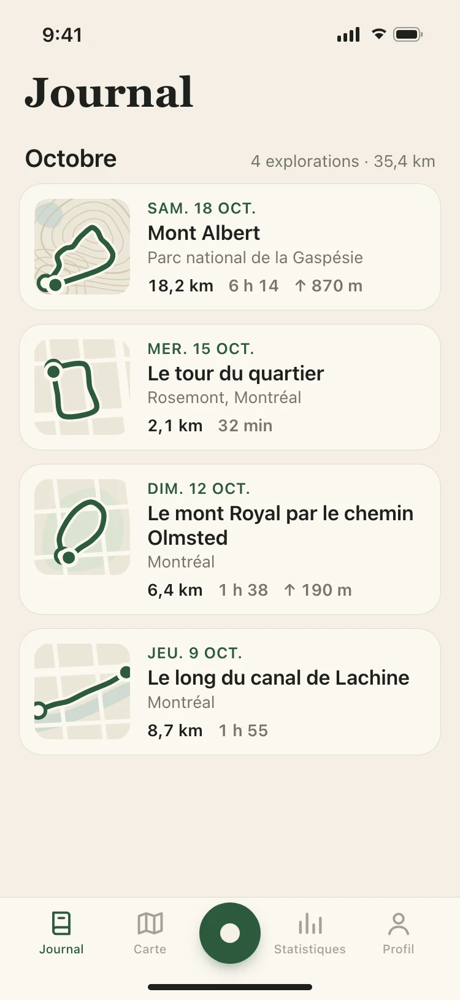
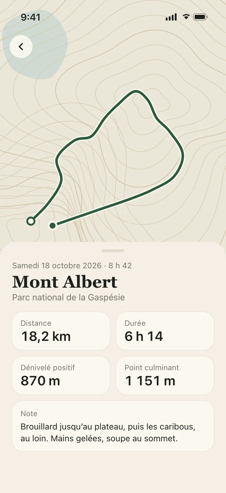
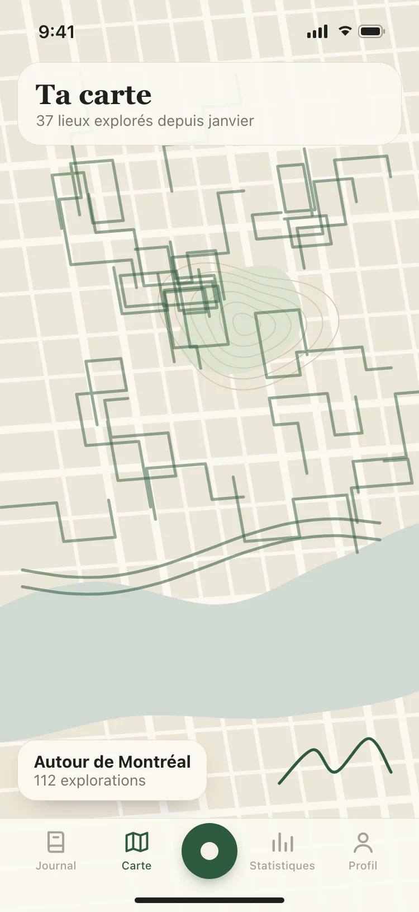
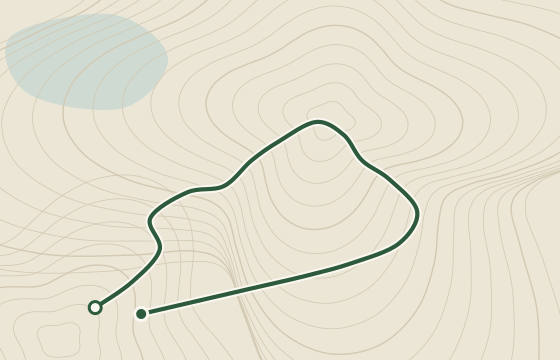

Un mercredi soir
Le tour du quartier
2,1 km32 minRosemont, Montréal
Bientôt sur l’App Store
Gratuite et 100 % personnelle. Sans compte, sans pub.





Arpente ne te chronomètre contre personne. Elle garde les marches et les randonnées qui racontent ta vie dehors, chacune avec sa carte, ses chiffres et quelques mots sur la journée.

Un mercredi soir
2,1 km32 minRosemont, Montréal

Un samedi d’octobre
18,2 km6 h 14↑ 870 mGaspésie
Les deux méritent d’être conservées.
Chaque parcours sur une belle carte
Lance l’enregistrement d’un toucher
Tes explorations, jour après jour
Distance, durée et dénivelé
Tous les lieux que tu as explorés
Quelques mots et des photos de la journée
Pas de fil, d’abonnés ni de classement
Ton journal dans ton iCloud privé
Tes parcours, dans un format ouvert
Sans compte, sans pub, sans abonnement
Bientôt sur l’App Store
Ouvre arpente.app sur ton iPhone avec l’appareil photo
Prix
Oui. Arpente est gratuite, sans publicité, sans abonnement et sans compte.
Compte
Non. Arpente fonctionne sans compte ni inscription. Ton journal est enregistré sur ton iPhone et synchronisé avec ton iCloud privé, auquel nous n’avons pas accès.
L’idée
Pas vraiment. Arpente ne te classe pas, ne compare pas ton rythme et ne te pousse pas à aller plus vite. Elle tient le journal des endroits où tu es passé : une marche de 2 km dans ton quartier mérite autant d’être conservée qu’une randonnée de 18 km en montagne.
Vie privée
Toi seulement. Pas de profil public, pas de fil, pas d’abonnés. Tes parcours montrent où tu habites et où tu marches : ils restent sur ton iPhone et dans ton iCloud, et nous ne les recevons jamais.
Enregistrer
Touche le bouton d’enregistrement et glisse ton iPhone dans ta poche. Arpente trace ton parcours au GPS et mesure la distance, la durée et le dénivelé. Ajoute une note ou une photo en chemin, puis touche Terminer à ton retour.
Sauvegarde
Ton journal se synchronise avec ton iCloud et revient sur ton nouvel iPhone, avec chaque parcours, chaque note et chaque photo.
GPX
Oui. Chaque parcours s’exporte en fichier GPX, le format ouvert que lisent la plupart des apps de cartes et de randonnée.
Android
Non. Arpente est offerte sur iPhone, en français et en anglais.